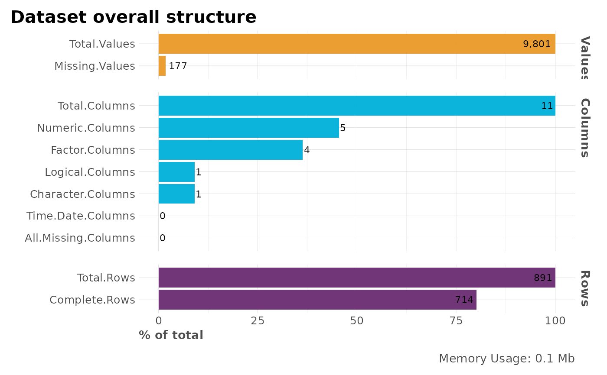

This function lets the user to check quickly the structure of a dataset (data.frame). It returns multiple counters for useful metrics, a plot, and a list of column names for each of the column metrics.
df_str(df, return = "plot", subtitle = NA, quiet = FALSE)
| df | Dataframe |
|---|---|
| return | Character. Return "skimr" for skim report, "numbers" for
stats and numbers, "names" for a list with the column names of each of
the class types, "plot" for a nice plot with "numbers" output, "distr"
for an overall summary plot showing categorical, numeric, and missing
values by using |
| subtitle | Character. Add subtitle to plot |
| quiet | Boolean. Keep quiet or show other options available? |
Depending on return input and based on your df structure:
list with the names of the columns classified by class
data.frame with numbers: total values, row, columns,
complete rows
plot with visualizations
Other Exploratory:
corr_cross(),
corr_var(),
crosstab(),
distr(),
freqs_df(),
freqs_list(),
freqs_plot(),
freqs(),
lasso_vars(),
missingness(),
plot_cats(),
plot_df(),
plot_nums(),
tree_var(),
trendsRelated()
#>#> $cols #> [1] "PassengerId" "Survived" "Pclass" "Sex" "Age" #> [6] "SibSp" "Parch" "Ticket" "Fare" "Cabin" #> [11] "Embarked" #> #> $nums #> [1] "PassengerId" "Age" "SibSp" "Parch" "Fare" #> #> $char #> [1] "Ticket" #> #> $factor #> [1] "Pclass" "Sex" "Cabin" "Embarked" #> #> $logic #> [1] "Survived" #> #> $time #> character(0) #> #> $allnas #> character(0) #>df_str(dft, "numbers", quiet = TRUE)#> metric counter p #> Total.Values Total.Values 9801 100.00 #> Total.Rows Total.Rows 891 100.00 #> Total.Columns Total.Columns 11 100.00 #> Numeric.Columns Numeric.Columns 5 45.45 #> Character.Columns Character.Columns 1 9.09 #> Factor.Columns Factor.Columns 4 36.36 #> Logical.Columns Logical.Columns 1 9.09 #> Time.Date.Columns Time.Date.Columns 0 0.00 #> All.Missing.Columns All.Missing.Columns 0 0.00 #> Missing.Values Missing.Values 177 1.81 #> Complete.Rows Complete.Rows 714 80.13 #> Memory.Usage Memory.Usage 103448 1055.48df_str(dft, "plot", quiet = TRUE)